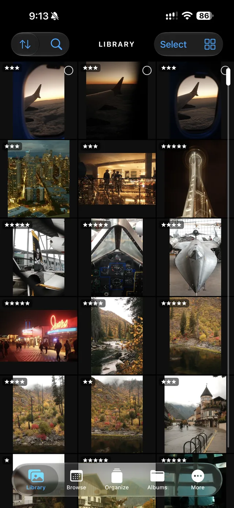
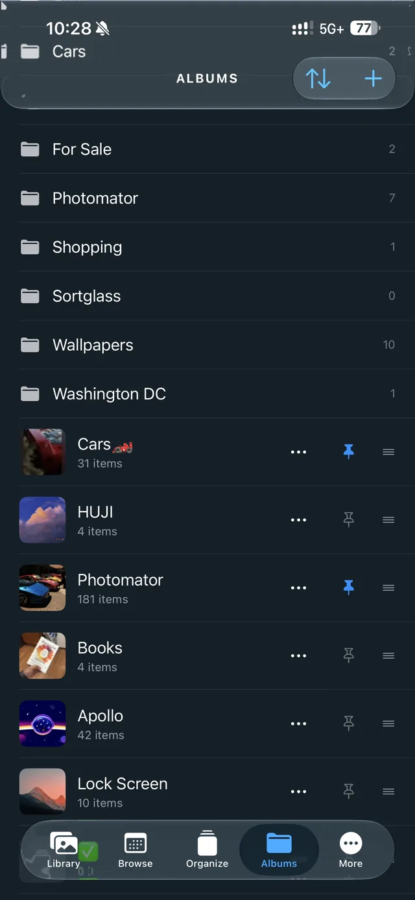
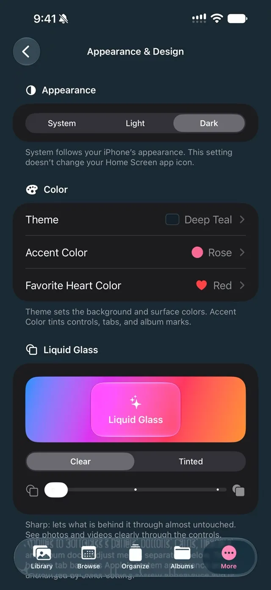

User Guide
Using SortGlass
Learn your way around SortGlass on iPhone, iPad and Mac. You can also open the guide from More in the app.
Getting started
SortGlass works on the Apple Photos library on your device. There’s no SortGlass account to create and nothing to import.
- Download SortGlass from the App Store. It supports iPhone with iOS 18 or later, iPad with iPadOS 18 or later, and Mac with macOS 15 or later and an Apple M1 chip or later.
- When asked, allow access to your photos. Review access later in More → Privacy & Photos Access, or in your device’s Settings (System Settings on Mac). Restricting access limits what SortGlass can show and organize.
- Choose what to organize in Browse, or go straight to Organize to start with everything.
- Let SortGlass read your library. Search and cleanup suggestions use what it finds. See Library Scans.
Connected to Apple Photos. Favorites, album changes, ratings on supported systems, and confirmed deletions apply to your Photos library too. Sending an item to SortGlass Trash only queues it: you review and confirm before it’s deleted from Photos.
Quick answers
The five tabs
- Library: see your whole library, search it, and select in bulk.
- Browse: search, find clutter, and choose what to organize.
- Organize: review one at a time. Favorite, rate, add to albums, or send to Trash.
- Albums: your albums, folders and the Vault.
- More: Library Scans, settings, appearance, your progress, and this guide.
Library
The bigger picture, all in one place.

See your full library
Scroll through your photos and videos, and tap one for a closer look. The Library shows the same photos as Browse, so a filter or search you choose there applies here too.
Explore photo locations
Tap the map button to see the photos you’re looking at on a map. Photos taken close together form stacks; tap one to open them. For a single photo, swipe up on it to open Details, tap the map, then turn on Nearby to see other photos taken there.
Work with several at once
Tap Select and choose photos, then touch and hold one for Favorite, Add to Album, Set Rating, Duplicate, Copy, Hide, Share and Add to Trash. You can also drag them into another app.
Choose your grid
Pinch to change the number of photos per row, and use the grid menu to adjust the layout. Favorite hearts, ratings and the green Kept check can be shown on the grid.
Revisit your ratings
See rated photos again and compare your picks. Ratings require Pro and a supported system; on iPhone and iPad, that means iOS 27 or iPadOS 27 or later.
Browse
Choose a smaller set of photos and videos to work through.
All, Unsorted or Kept
Start with everything. Unsorted shows photos you haven’t filed into an album or marked Keep. Kept shows the ones you’ve marked Keep.
Jump to a year
The year tiles show how many matching items were taken that year. Tap a year to start there in Organize.
Focus with Pro
Combine filters for favorites, media and file types, albums, ratings on supported devices, and a Date Range for a trip or a few days. Customize your filters and save the combinations you use again.
See trips and places
Trips & Events groups photos by when and where they were taken. Set a home city on the card so trips are measured from it. The Map card shows your photos on a map. Opening a trip needs Pro.
Choose how to review
Open the results in Library for a grid, or in Organize to review them one at a time.
Search
Search in Browse or in the Library’s search bar.
Describe what you’re looking for
Type what’s in the photo, such as “dog on a beach” or “red car at night”. SortGlass compares your words with what it read in each photo, on your device.
Pick a suggestion
As you type, suggestions come by kind: things in photos, colors, places, dates, camera details, and words inside photos. Each one you pick becomes a tag, and every tag narrows the results.
Search by date or place
Type a year, a month, a season (“summer 2023”), a holiday (“Christmas”), a time of day (“morning”) or a recent time (“last week”). Add a place or a date to a description to narrow it (“dog on a beach 2023”).
Find words in photos
To find text in a screenshot or a sign, choose the Text in Photos suggestion.
Search works best once Library Scans has read your library.
Cleanup
Browse’s cards help you find what you don’t need.
Storage
The bar shows how much space your Videos, Live Photos, Screenshots and Photos take. With Pro, tap a part to see just those.
Cleanup Suggestions
Likely clutter, by kind: Screenshots, Screen Recordings, Saved Images, Documents & Receipts, and Blurry or Poor Shots. Each shows how many there are.
Similar & Duplicates
SortGlass compares your photos on your device and finds exact copies and look-alikes, such as bursts and retakes. Open a set to compare the photos side by side and choose which to keep.
Reviewing Cleanup Suggestions and Similar & Duplicates needs Pro. What you choose goes to SortGlass Trash first, so nothing is deleted until you confirm.
Organize
Review one photo or video at a time, with your albums beneath it.
Swipe to keep moving
Swipe sideways to browse, down to favorite, and up to send a photo or video to Trash. Choose Newest First or Oldest First in the sort menu.
Keep without filing
Tap Keep to mark a photo sorted and move on, without favoriting or filing it. Kept photos show a green check. Tap Kept to remove the mark.
Give photos a home
Tap an album beneath the photo to add it. A colored album icon means it’s already there; tap again to remove it without advancing. Tap New to create an album or folder. A photo can belong to several albums.
Choose your strongest shots
With Pro on a system that supports ratings, tap Set Rating, then a star. Ratings save directly to your Apple Photos library, not just SortGlass. Revisit them in Library or filter them in Browse for a second pass. On iPhone and iPad, ratings require iOS 27 or iPadOS 27 or later.
Undo, redo, and inspect
The curved arrows undo and redo recent actions. History lets you revisit and undo your last 100 album and Trash actions. Tap ⓘ for Details: camera and lens information, albums, a map, and on iOS 27 the caption and keywords. Details stays open as you move between photos.
Albums
Everything in its place.

Browse and manage
Choose All, Albums, Folders or Pinned at the top. Search for an album or folder, then open it to browse. Choose Organize Album to review its contents one at a time.
Folders inside folders
Folders can hold albums and other folders, as in Photos. Choose Move to Folder from the ••• menu of an album or folder. In your own order, you can also drag an album onto a folder.
Keep favorites close
Pin the albums and folders you use most to put them in Organize’s album row, in the order you choose. Open a pinned folder right in the row.
The Vault
A private place for photos and videos, encrypted on your device. Find it in Albums.
Set it up
Choose a password or passcode, then save the recovery key SortGlass shows you. The recovery key opens the Vault if you forget your password or passcode. Without either one, nobody can open the Vault, not even SortGlass. You can also turn on Face ID or Touch ID.
Move photos in
Choose Move to Vault in a photo’s menu, in Select, or in Organize’s album row. SortGlass encrypts each item, then deletes the original from Apple Photos, which keeps it in Recently Deleted for 30 days. You can also share photos to SortGlass from another app.
Inside the Vault
Organize items into folders, which can have their own password or passcode. Items you delete stay in the Vault’s Recently Deleted for 30 days. To take something out, use Export, which shares a copy.
On your other devices
The Vault’s encrypted copy is kept in your private iCloud. Open it on your other devices with the same password or passcode. The Vault locks when you leave SortGlass.
Photo tools
In the photo menus of the Library, albums and Cleanup, for one photo or a selection.
Export as JPEG
Choose a quality, and whether to include the date and location, then share. Videos are skipped.
Adjust Date & Place
Set one date and time for all, or shift them all by the same amount so they keep their order. Type a place, paste coordinates, drop a pin, or remove the place. Changes are saved in Apple Photos, and Undo puts the old ones back.
Captions and keywords
On iOS 27, Details shows a photo’s caption and keywords from Apple Photos. Tap them to edit. Search finds them too.
Library Scans
SortGlass reads your library once to power search and cleanup. Find it in More → Library Scans.
What it reads
Camera & Lens reads each item’s camera details and file size. Objects & Text reads what’s in each photo and the words in it. Cleanup & Similar finds clutter and look-alikes. Everything is read on your device, and your photos aren’t uploaded.
Let it run
A big library can take a while. Turn on Scan in Background to keep reading while you use other apps or lock your iPhone (iOS and iPadOS 26 or later). Or use Scan Overnight: plugged in, the screen stays dim and on until scanning finishes. On a Mac, scanning runs while SortGlass is open.
Photos in iCloud
Photos stored only in iCloud are read only if you allow it with Download iCloud Photos: Wi-Fi Only, or Wi-Fi & Cellular. Sync Now reads new photos right away.
Your other devices
With iCloud Sync on, your other devices and a reinstall pick up what was found, so photos aren’t read again. When you delete a photo, what was read in it is removed too.
More
Make SortGlass work for you.

Make it yours
Explore Appearance & Design: themes, background and accent colors, heart colors, launch animations, app icons and loading animations. Pro unlocks every theme, color, icon and launch animation.
Reminders and widgets
In Notifications, choose reminders for On This Day, photos to sort and streaks, Cleanup reminders on your own schedule, and a monthly recap. Add SortGlass widgets to your Home Screen: Left to Sort, On This Day and Space to Free.
Privacy and security
In Privacy & Photos Access, turn on App Lock to open SortGlass with Face ID, Touch ID or your passcode. On-Device Search says what SortGlass reads and where it’s kept.
See your progress
Your Progress holds your Cleanup Dashboard, statistics, goals and achievements.
Come back anytime
You can always find the User Guide in More.
iPad, Mac and iCloud
Use a bigger screen
SortGlass supports iPad multitasking and runs on Apple silicon Macs as a Designed for iPad app. Details opens as a column beside the photo. Use a mouse or trackpad to click-drag a selection, or Shift-click to select a range. Customize keys in More → Keyboard Shortcuts.
Choose what syncs
In More → iCloud Sync, one switch turns syncing on or off, and What Syncs lists each category: Appearance & Settings, Pinned Albums & Order, Goals, History & Statistics, Saved Filters, Library Scans, and Keyboard Shortcuts on iPad and Mac. Tap one to turn it on or off. Your Organize position and SortGlass Trash stay on each device.
Delete Everything from iCloud removes SortGlass’s data from iCloud and keeps what’s on your device. iCloud Sync is separate from iCloud Photos, which syncs your Photos library according to your Apple settings.
Trash and deleting
Swiping up queues an item in SortGlass Trash. Nothing is deleted from your library at that point.
- Open Trash to review the queue. You can take items back out.
- Choose Delete. Your device asks you to confirm.
- Confirmed items move to Recently Deleted in Apple Photos, where Apple generally keeps them for up to 30 days unless you delete them sooner.
To recover something after deleting it, open the Photos app, go to Recently Deleted and choose Recover.
Free and Pro
SortGlass is free to download. The free version includes up to 100 Trash and Album actions each week; Favorites, Browse, Search and Undo are always included, and the Vault holds up to 5 items. The weekly count starts again every Monday at 00:00 UTC.
SortGlass Pro unlocks unlimited organizing, star ratings on supported systems, combined and saved filters including Date Range, reviewing Cleanup Suggestions, Similar & Duplicates and Trips, and every theme, app icon and accent color. Every Pro feature is included with any Pro subscription or the Lifetime purchase.
Restore a purchase
Open More → SortGlass Pro → Restore Purchases while signed in with the Apple Account you used to buy Pro.
Cancel a subscription
On iPhone or iPad, go to Settings → your name → Subscriptions. On Mac, open your account in the App Store and choose Subscriptions. See Apple’s cancellation instructions. Subscriptions renew automatically unless canceled at least 24 hours before the end of the current period. Deleting the app doesn’t cancel a subscription, and buying Lifetime doesn’t cancel an existing one.
Redeem an offer code
In SortGlass, open More → Redeem Code. On iPhone or iPad, you can also open the App Store, tap your account picture, then choose Redeem Gift Card or Code.
Need more help? Visit Support or email support@sortglass.com.